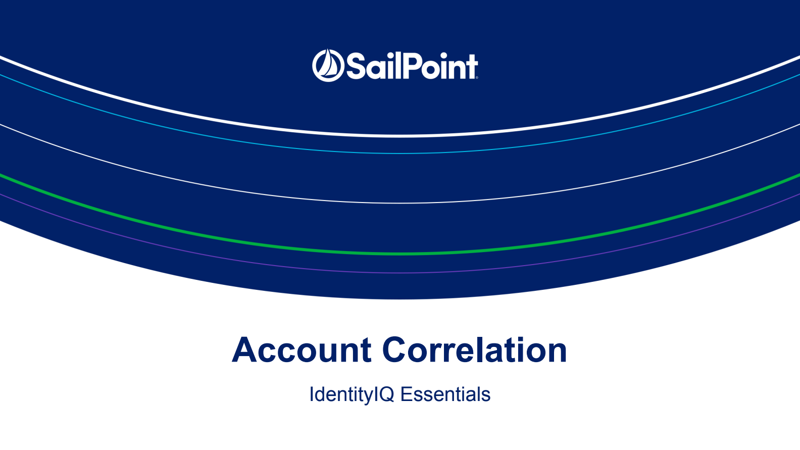
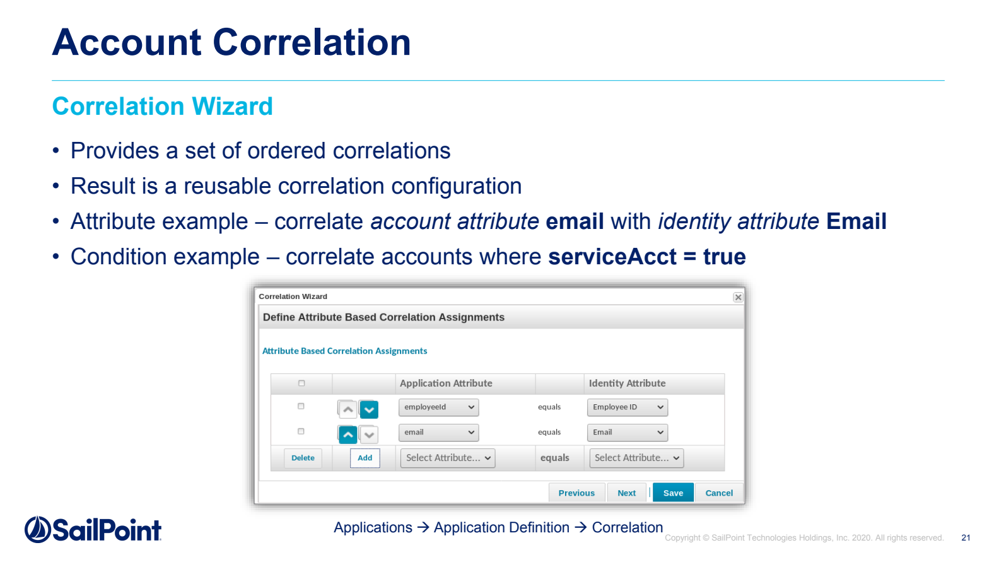

All course topics · Practice companion
12. Account Correlation
Attach accounts to the correct identity
Correlation matches an application account to its authoritative Identity Cube. Success adds the account to the intended existing cube. Unsuccessful correlation can create a non-authoritative, uncorrelated cube, which needs investigation rather than being assumed to represent a new employee.
The supplied precedence is correlation rule → configured correlation logic → default logic. Rapid Setup provides a straightforward account-attribute-to-identity-attribute match. The correlation wizard supports ordered conditions in a reusable definition. A rule handles cases beyond simple matching but runs for each account during each aggregation, so its correctness and cost matter.





Understand the processing pipeline
The connector reads native data and performs any supported filtering, merging and connector-level manipulation. Application customization can normalize the resulting resource object before correlation and creation/update. A wrong source value, schema choice or transformation can therefore produce a correlation problem even when the matching expression looks reasonable.

Repair exceptions and confirm the outcome
Identity Correlation allows investigated accounts to be manually assigned to identities; the course says this relationship is retained. Moving an account from the wrong Cube is a separate repair. Correct systemic logic as well, so later aggregations do not keep producing equivalent exceptions.
After resolving ownership, inspect and prune truly empty non-authoritative cubes using the intended maintenance task. Pruning is cleanup after a verified repair, not a substitute for investigating ownership. Refresh then promotes the relevant access information into the certification-ready identity picture.
The related exercises inspect LDAP correlation, update the Email identity source, enable pass-through, and later use an Uncorrelated Accounts report to investigate and repair exceptional accounts. Their exact training data and verification screens are preserved in the practice companion.


Related practice and source pages
Exercise 1.5 — Define LDAP Application · Exercise 2.3 — Uncorrelated Accounts and Data Maintenance